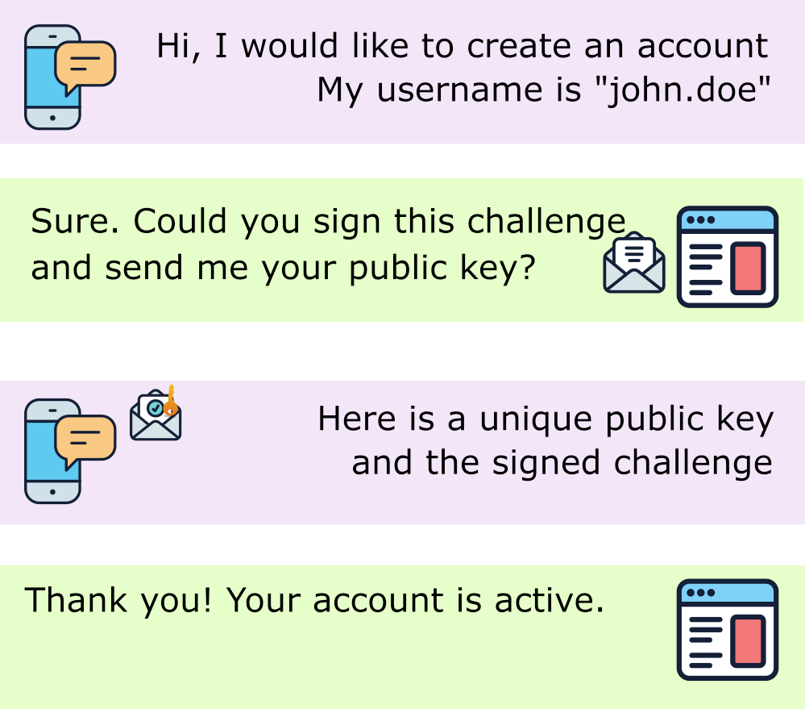
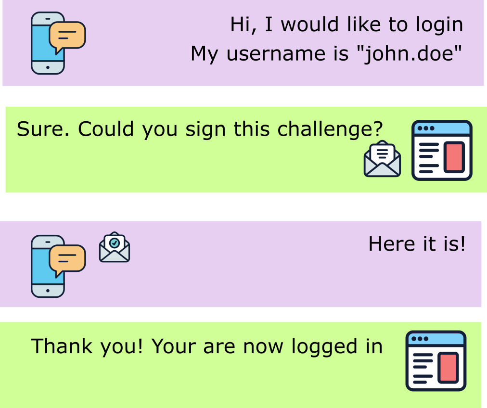

Ceremonies¶
In WebAuthn, authentication workflows are called "ceremonies" - a term that emphasizes the formal, cryptographic nature of these operations. There are two main ceremonies that form the foundation of WebAuthn authentication.
The two ceremonies¶
WebAuthn defines two distinct ceremonies:
1. Attestation ceremony (registration)¶
Also called: Creation Ceremony, Registration Ceremony
Purpose: Associates an authenticator with a user account
When to use: * Creating a new user account with WebAuthn * Adding an additional authenticator to an existing account * Registering a backup security key
2. Assertion ceremony (authentication)¶
Also called: Request Ceremony, Authentication Ceremony, Login Ceremony
Purpose: Authenticates a user using a previously registered authenticator
When to use: * User login * Step-up authentication for sensitive operations * Re-authentication after session timeout
Common workflow pattern¶
Both ceremonies follow a similar two-step pattern:
Step 1: Options creation¶
The Relying Party (your server) creates options that: * Define parameters for the operation * Include a cryptographic challenge * Specify requirements and preferences * Are sent to the browser/authenticator
Step 2: Response verification¶
The authenticator: * Prompts the user for interaction * Performs cryptographic operations * Returns a signed response * The server validates the response
Info
User interaction varies based on authenticator capabilities and your configuration. It can range from a simple button touch to biometric authentication (fingerprint, facial recognition, PIN code).
Attestation ceremony (registration)¶
The attestation ceremony registers a new authenticator credential for a user.

Attestation flow breakdown¶
Server side (step 1)¶
// 1. Create PublicKeyCredentialCreationOptions
$publicKeyCredentialCreationOptions = PublicKeyCredentialCreationOptions::create(
rp: $rpEntity, // Your application identity
user: $userEntity, // User being registered
challenge: random_bytes(32), // Cryptographic challenge
pubKeyCredParams: $pubKeyCredParams, // Allowed algorithms
authenticatorSelection: $authenticatorSelection // Device requirements
);
// 2. Store challenge in session (for later verification)
$session->set('webauthn_creation_challenge', $publicKeyCredentialCreationOptions->challenge);
// 3. Send options to browser as JSON
return new JsonResponse($publicKeyCredentialCreationOptions);
Client side (browser)¶
// 1. Receive options from server
const options = await fetch('/webauthn/register/options').then(r => r.json());
// 2. Call WebAuthn API
const credential = await navigator.credentials.create({
publicKey: options
});
// 3. Send credential back to server
await fetch('/webauthn/register', {
method: 'POST',
body: JSON.stringify(credential)
});
Server side (step 2)¶
// 1. Load the attestation response
$publicKeyCredential = $serializer->deserialize(
$request->getContent(),
PublicKeyCredential::class,
'json'
);
// 2. Verify the response
$credentialSource = $attestationValidator->check(
$publicKeyCredential->response,
$publicKeyCredentialCreationOptions,
$request->getHost()
);
// 3. Save the new credential
$credentialRepository->saveCredentialSource($credentialSource);
What happens during attestation?¶
- Challenge Generation: Server creates a random challenge to prevent replay attacks
- User Prompt: Browser asks user to interact with authenticator
- Key Generation: Authenticator generates a new public/private key pair
- Attestation: Authenticator signs the public key and client data
- Verification: Server verifies signatures and stores the public key
- Storage: Credential is saved and associated with the user account
Attestation data contains¶
- Public Key: Used to verify future signatures
- Credential ID: Unique identifier for this credential
- AAGUID: Authenticator model identifier
- Signature Counter: Used to detect cloned authenticators
- Attestation Statement: Optional proof of authenticator authenticity
Assertion ceremony (authentication)¶
The assertion ceremony authenticates a user with a previously registered credential.

Assertion flow breakdown¶
Server side (step 1)¶
// 1. Get user's registered credentials
$credentials = $credentialRepository->findAllForUserEntity($userEntity);
$allowedCredentials = array_map(
fn($c) => $c->getPublicKeyCredentialDescriptor(),
$credentials
);
// 2. Create PublicKeyCredentialRequestOptions
$publicKeyCredentialRequestOptions = PublicKeyCredentialRequestOptions::create(
challenge: random_bytes(32), // New challenge
allowCredentials: $allowedCredentials, // User's credentials
userVerification: 'preferred' // UV requirement
);
// 3. Store challenge in session
$session->set('webauthn_request_challenge', $publicKeyCredentialRequestOptions->challenge);
// 4. Send options to browser
return new JsonResponse($publicKeyCredentialRequestOptions);
Client side (browser)¶
// 1. Receive options from server
const options = await fetch('/webauthn/login/options').then(r => r.json());
// 2. Call WebAuthn API
const credential = await navigator.credentials.get({
publicKey: options
});
// 3. Send assertion back to server
await fetch('/webauthn/login', {
method: 'POST',
body: JSON.stringify(credential)
});
Server side (step 2)¶
// 1. Load the assertion response
$publicKeyCredential = $serializer->deserialize(
$request->getContent(),
PublicKeyCredential::class,
'json'
);
// 2. Find the credential
$credentialSource = $credentialRepository->findOneByCredentialId(
$publicKeyCredential->rawId
);
// 3. Verify the assertion
$updatedCredential = $assertionValidator->check(
$credentialSource,
$publicKeyCredential->response,
$publicKeyCredentialRequestOptions,
$request->getHost(),
$userEntity->id
);
// 4. Update credential (counter may have changed)
$credentialRepository->saveCredentialSource($updatedCredential);
// 5. Log the user in
$session->set('user_id', $userEntity->id);
What happens during assertion?¶
- Challenge Generation: Server creates a new random challenge
- Credential Selection: Browser identifies available credentials
- User Prompt: User interacts with authenticator (touch, PIN, biometric)
- Signature: Authenticator signs the challenge with the private key
- Verification: Server verifies signature using stored public key
- Counter Check: Server verifies counter to detect cloning
- Authentication: If valid, user is logged in
Assertion data contains¶
- Authenticator Data: Flags, counter, extensions
- Client Data: Origin, challenge, type
- Signature: Cryptographic proof using the private key
- User Handle: Optional user identifier (for usernameless authentication)
Key differences between ceremonies¶
| Aspect | Attestation (Registration) | Assertion (Authentication) |
|---|---|---|
| Purpose | Create new credential | Verify existing credential |
| JavaScript API | navigator.credentials.create() |
navigator.credentials.get() |
| Server Action | Store new public key | Verify signature |
| Key Operation | Generate key pair | Sign with private key |
| Options Class | PublicKeyCredentialCreationOptions |
PublicKeyCredentialRequestOptions |
| Validator Class | AuthenticatorAttestationResponseValidator |
AuthenticatorAssertionResponseValidator |
| User Experience | "Register security key" | "Use security key to sign in" |
Security considerations¶
Challenge uniqueness¶
Both ceremonies require a unique, random challenge:
// Always generate a fresh challenge
$challenge = random_bytes(32); // 32 bytes = 256 bits of entropy
// NEVER reuse challenges
// NEVER use predictable challenges (like timestamps)
// NEVER skip challenge verification
Challenge storage¶
Store challenges temporarily in server-side sessions:
// Store during Step 1 (options creation)
$session->set('webauthn_challenge', base64_encode($challenge));
$session->set('webauthn_challenge_expires', time() + 60); // 60 second timeout
// Verify and delete during Step 2 (response validation)
$storedChallenge = base64_decode($session->get('webauthn_challenge'));
$session->remove('webauthn_challenge');
if (time() > $session->get('webauthn_challenge_expires')) {
throw new \Exception('Challenge expired');
}
Origin validation¶
Always verify the origin matches your domain:
// Server must verify origin during validation
$credentialSource = $attestationValidator->check(
$publicKeyCredential->response,
$publicKeyCredentialCreationOptions,
'https://example.com' // Must match your actual domain
);
Common pitfalls¶
❌ Challenge reuse¶
❌ Skipping verification¶
// WRONG: Trusting client data without validation
$credentialId = $_POST['credentialId'];
$user = $userRepository->find($credentialId); // DON'T!
❌ Incorrect origin¶
// WRONG: Verifying with wrong domain
$attestationValidator->check($response, $options, 'http://localhost');
// But the actual domain is https://example.com
Best practices¶
✅ Use timeouts¶
Set reasonable timeouts for user interaction:
$publicKeyCredentialCreationOptions = PublicKeyCredentialCreationOptions::create(
rp: $rpEntity,
user: $userEntity,
challenge: random_bytes(32),
timeout: 60000 // 60 seconds in milliseconds
);
✅ Handle errors gracefully¶
Provide helpful error messages:
try {
$credentialSource = $attestationValidator->check(/* ... */);
} catch (\Webauthn\Exception\InvalidDataException $e) {
return new JsonResponse([
'success' => false,
'error' => 'Invalid authenticator response. Please try again.'
], 400);
}
✅ Store credential metadata¶
Keep track of when and how credentials were registered:
$credential->createdAt = new \DateTimeImmutable();
$credential->lastUsedAt = null;
$credential->name = 'My YubiKey'; // Allow users to name their keys
$credential->transports = ['usb', 'nfc']; // Store transport hints
See also¶
- Authenticators - Learn about different authenticator types
- User Verification - Understand UP vs UV flags
- Pure PHP Registration - Detailed attestation implementation
- Pure PHP Authentication - Detailed assertion implementation
- WebAuthn Specification - Official ceremony specifications